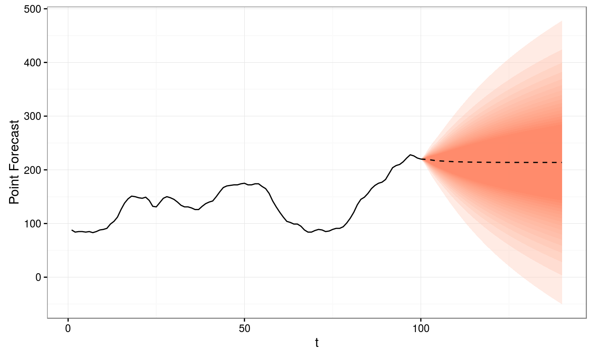
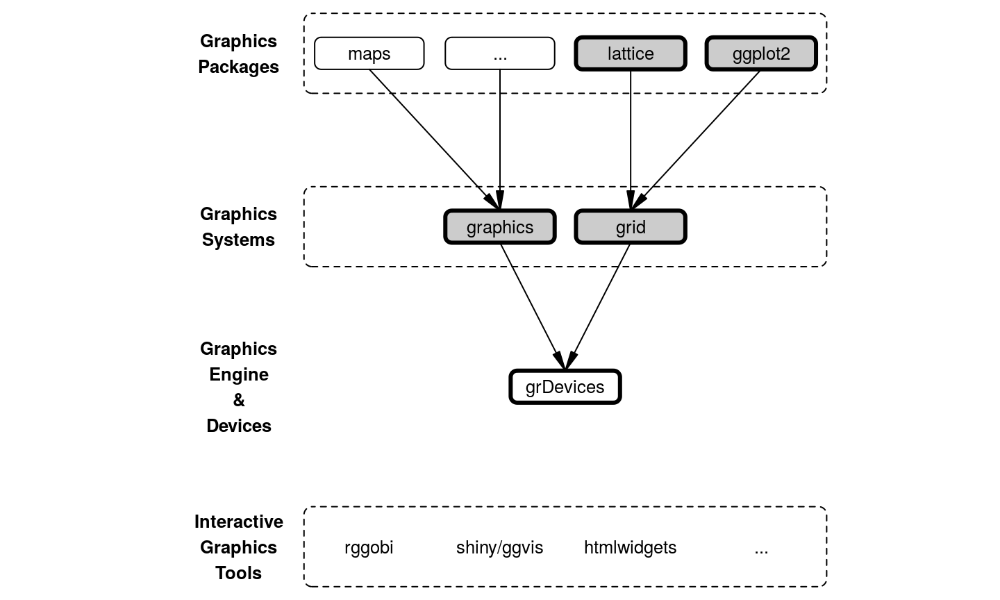
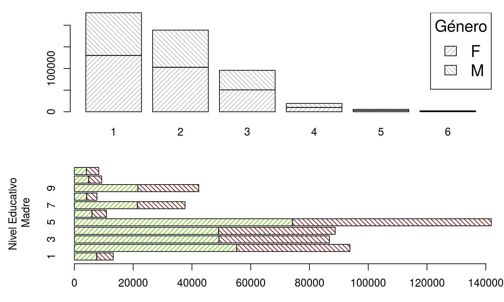

Motivación
Contenido (I)
- Qué es R: bogota-r.github.io/intro
- Gráficas Base
- Métodos - Todo de una:
plot() - El modelo base
- Estado y parametros graficos:
par()
- Métodos - Todo de una:
- Grid
- Qué es grid (o por qué otro sistema?)
- El modelo grid
- Componentes
Contenido (II)
- lattice
- Trellis plots
- ggplot2
- Una gramática de gráficas: Capas, geometrías y componentes estéticos
Contenido (III)
- Maś allá: gráficas interactivas
- ggvis y shiny
- Integración con JS y htmlwidgets
Qué es R?
"R is a language and environment for statistical computing and graphics."
Entre otras cosas R incluye:
- capacidad para almacenar y manipular datos efectivamente
- un conjunto de operadores para hacer cálculos sobre arreglos, particularmente matrices
- una colección grande, coherente e integrada de herramientas para el análisis de datos
dispositivos gráficos para el análisis y visualización de datos, tanto en pantalla como en impreso
- un lenguaje de programación bien desarrollado, simple y eficaz
El ambiente para graficas de R

Gráfica basada en codigo del libro R Graphics de Paul Murrell
Básicamente
library("graphics")
library("grid")
# http://lattice.r-forge.r-project.org/
library("lattice")
# https://github.com/hadley/ggplot2
library("ggplot2")
Gráficas Base
Métodos (o todo de una):
plot()para "diagramas de dispersión"barplot()para gráficas de barrahist()para histogramasboxplot()(ybxp()) para diagramas de cajas y bigotespie()- mejor evitarlos
plot()
set.seed(13579)
y <- rnorm(30)
types <- c("p", "l", "b", "c", "o", "h", "s", "S", "n")
par(mfrow = c(3, 3), cex = 0.6, mar = c(3, 3, 3, 1))
for (type in types){
plot(y, type = type, main = paste0("type = ", type))
}
plot()
plot()
plot() es una función genérica. Hay muchas formas de especificar los datos y dependiendo de lo que se le pase se genera uno u otro tipo de gráfico.
Veamos unos ejemplos usando el conjunto de datos ìris:
str(iris)
#> 'data.frame': 150 obs. of 5 variables: #> $ Sepal.Length: num 5.1 4.9 4.7 4.6 5 5.4 4.6 5 4.4 4.9 ... #> $ Sepal.Width : num 3.5 3 3.2 3.1 3.6 3.9 3.4 3.4 2.9 3.1 ... #> $ Petal.Length: num 1.4 1.4 1.3 1.5 1.4 1.7 1.4 1.5 1.4 1.5 ... #> $ Petal.Width : num 0.2 0.2 0.2 0.2 0.2 0.4 0.3 0.2 0.2 0.1 ... #> $ Species : Factor w/ 3 levels "setosa","versicolor",..: 1 1 1 1 1 1 1 1 1 1 ...
plot()
plot(iris)
plot()
par(mfrow = c(1, 2), mar = c(5, 4, 2, 2)) plot(iris$Petal.Length, iris$Petal.Width) plot(Petal.Length ~ Species, data = iris)
plot() - Métodos
methods("plot")
#> [1] plot.acf* plot.data.frame* plot.decomposed.ts* #> [4] plot.default plot.dendrogram* plot.density* #> [7] plot.ecdf plot.factor* plot.formula* #> [10] plot.function plot.hclust* plot.histogram* #> [13] plot.HoltWinters* plot.isoreg* plot.lm* #> [16] plot.medpolish* plot.mlm* plot.ppr* #> [19] plot.prcomp* plot.princomp* plot.profile.nls* #> [22] plot.raster* plot.spec* plot.stepfun #> [25] plot.stl* plot.table* plot.ts #> [28] plot.tskernel* plot.TukeyHSD* #> see '?methods' for accessing help and source code
barplot() …
… pero antes unos datos más interesantes
library("saber") # Ver github.com/nebulae-co/saber
data(SB11_20142) # glimpse(SB11_20142) estratos <- with(SB11_20142, table(PERS_GENERO, FINS_ESTRATOVIVIENDAENERGIA)) educacion_madre <- SB11_20142 %$% table(PERS_GENERO, FINS_NIVELEDUCATIVOMADRE)
barplot()
par(mfrow = c(2, 1), mar = c(3, 5.5, 1, 1), cex = 0.95)
barplot(estratos, angle = c(45, 135), density = 20, col = "grey",
names = colnames(estratos), xlab = "Estrato")
legend("topright", title = "Genero", rownames(estratos), cex = 1.5,
angle = c(45, 135), density = 20, fill = "gray")
barplot(educacion_madre, angle = c(45, 135), density = 20,
col = colors()[c(50, 100)], horiz = TRUE,
names = colnames(educacion_madre), ylab = "Nivel Educativo\n Madre")
barplot()

boxplot() - bxp()
par(mfrow = c(1, 2), mar = c(4, 4, 4, 2), cex = 0.8)
boxplot(MATEMATICAS_PUNT ~ FINS_ESTRATOVIVIENDAENERGIA, data = SB11_20142,
col = "light grey")
boxplot(MATEMATICAS_PUNT ~ FINS_ESTRATOVIVIENDAENERGIA, data = SB11_20142,
pch = 1:6, boxwex = 0.5, boxfill = "lightblue", frame.plot = FALSE,
main = "Distribución del puntaje\n de matematicas por estrato",
xlab = "Estrato", ylab = "Puntaje de matematicas")
boxplot() - bxp()
Gráficas para 3 ó más dimensiones
persp()superficies.contour()yfilled.contour()contornos.image()cuadrícula con colores en \(z\).symbols()diagramas de dispersión con símbolos de tamaño variable.fourfoldplot()para tablas de contingencia \(2\times 2\times k\).mosaicplot()stars()para una visualización de varias variables cuantitativas.
Otras funciones gráficas de alto nivel:
matplot()para gráficas de dispersión cruzando matrices.stripchart()gráfica de dispersión en una sola dimensión.curve()para gráficar funciones (comoplot.function()).
Algunas más modernas o específicas:
Además de los métodos específicos para plot():
dotchart()para resumir una variable cuantitativa cruzada con una o más variables categóricas.coplot()gráficas condicionales (Trellis).sunflowerplot()para diagramas de dispersión con datos superpuestos - alternativas para esto sonimage()ohexbin::hexbin().assocplot()visualización de una prueba de independencia para una tabla de contingencia bi-dimensional -vcdextiende esto y ofrece más herramientas para datos categóricos.
par() y algunos parametros gráficos
Grid
Qué es grid?
Componentes de bajo nivel
Lattice
- Interfaz de formula:
~ x | A: graficar la variablexpara cada nivel deA.y ~ x | A * Bgraficar la relación entre las variables numericasyyxpara cada combinación de niveles de los "facores"AyB.…
…
Lattice - Funciones de alto nivel
| Gráfica | Descripción | Ejemplo de fórmula |
|---|---|---|
| histogram() | Histograma | ~ x |
| densityplot() | Gráfica de "Densidad Kernel" | ~ x | A * B |
| qqmath() | Gráfica de Cuantiles Teoricos | |
| qq() | Gráfica de Cuantiles para dos Muestras | |
| stripplot() | Stripchart | A ~ x ó x ~ A |
| bwplot() | Box-Plots Comparativos | x ~ A ó A ~ x |
| dotplot() | Gráfica de Puntos (de Cleveland) | ~ x | A |
| barchart() | Gráfica de Barras | x ~ A ó A ~ x |
Lattice - Funciones de alto nivel
| Gráfica | Descripción | Ejemplo de fórmula |
|---|---|---|
| xyplot() | Diagrama de Dispersión | y ~ x | A |
| splom() | Matriz de Diagramas de Dispersión | data.frame |
| contourplot() | Gráfica de Contornos para Superficies | z ~ x * y |
| levelplot() | False Color Level Plot of Surfaces | z ~ y * x |
| wireframe() | Gráfica de Perspectiva 3D | z ~ y * x |
| cloud() | Diagrama de Dispersión 3D | z ~ x * y | A |
| parallel() | Gráfica de Coordinadas Paralelas | data.frame |
ggplot2
R moderno o el "Hadleyverse"
readr,readxlyhavenlectura de archivos.lubridatemanejo de fechas y tiempo.stringrinterface astringipara manejo de caracteres.dplyrytidyrmanipulación y limpieza de datos.ggplot2una gramática de gráficas - util para abstraer y construir visualizaciones.
ggplot2 - Una Gramatica de Graficas
- Capas:
- Datos +
- Estadisticas +
- Componentes Æsteticos +
- Geometria
ggplot(...) + layer(...) + layer(...) + helper(...) + helper(...) + theme(...)
ggplot2 - Una Gramatica de Graficas

ggplot2 - geometrias y estadísticas
ggplot(mtcars) + aes(y = mpg, x = factor(cyl)) + geom_violin()

Más allá: Gráficas interactivas
ggvis y shiny
Integración con JS - htmlwidgets
Ayuda y otros recursos
La vista de tareas con la que empezamos: Vista de Tareas/Gráficas.
Canales: en twitter #rstats y en StackOverflow el tag R. También pueden googlea-R R + "pregunta".
Algunas buenas referencias:
- Quick R - Gráficas
- Springer - Use R Series R en la práctica en diferentes contextos.
- La pagina de Paul Murrel
- …
Preguntas?
png_meme_generator <- function(web_path, over_text, under_text){
con <- url(web_path, open = 'rb')
rawpng <- readBin(con, what = 'raw', n = 50000)
close(con)
img <- png::readPNG(rawpng)
old_par <- par(no.readonly = TRUE)
on.exit(par(old_par))
par(xpd = NA, mgp = c(0, 0, 0), oma = c(0, 0, 0, 0), ann = F)
plot.new()
plot.window(0:1, 0:1)
usr <- par("usr")
rasterImage(img, usr[1], usr[3], usr[2], usr[4])
text(.5, 1.05, over_text, cex = 2, col = "#000000", pos = 3)
text(.5, -.05, under_text, cex = 2, col = "#000000", pos = 1)
}
Preguntas?
png_meme_generator( "http://i2.kym-cdn.com/photos/images/original/000/208/140/1322357772581.png", "Tu cara cuando ves", "un meme hecho en R")
Colofón
Esta presentación fue escrita en RMarkdown desde RStudio y compilada por rmarkdown en la plantilla ioslides de Google gracias a knitr y pandoc. Publicada en la web en GitHub gracias a GitHub Pages.